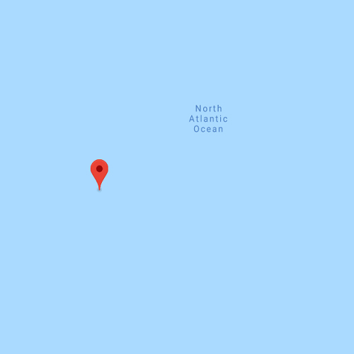
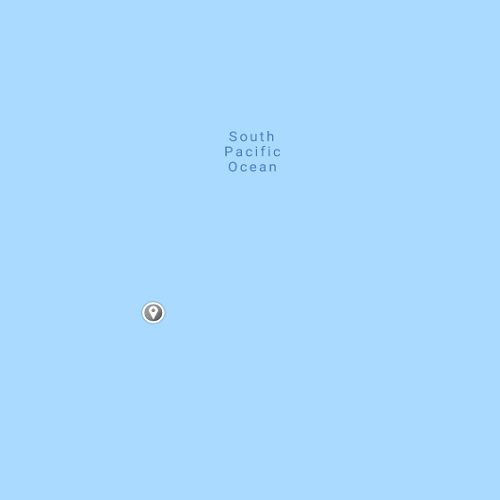

For more than 20 years SS L'Ocean North Atlantic has been bringing people together over great food. 24 hours a day. 365 days a year. Here, you can order the usual or try something new — like our cath yourself your own lobster featuring crisp air captured from North Pole in your scuba air tank. See you at SS L'Ocean!
Located only seven hours away from the shore, SS L'Ocean South Pacific specializes in the freshest fish and seafood prepared with Caribbean flair, and features a wonderful oyster and ceviche bar in front of the open kitchen. In 2003, SS L'Ocean was named one of the 75 best new restaurants in the world by "Obviously The Best" magazine.
